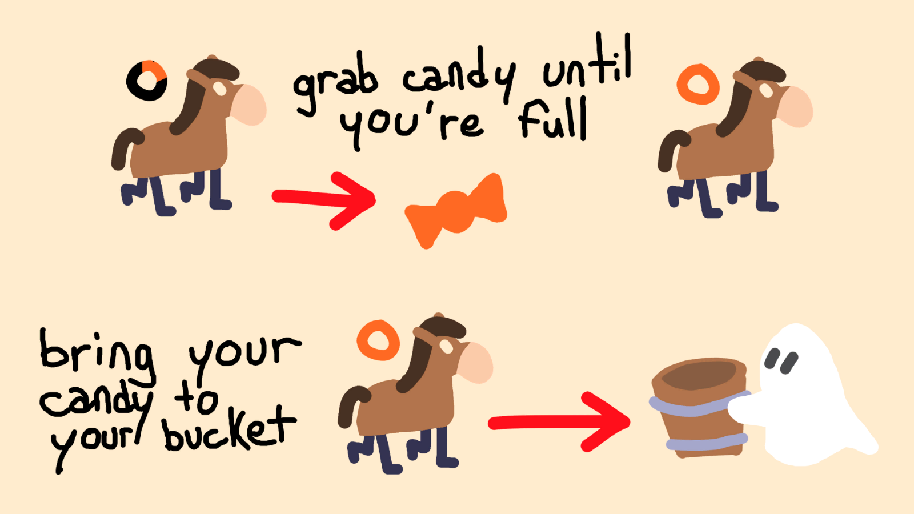
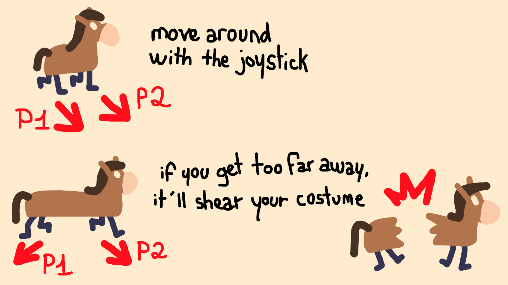
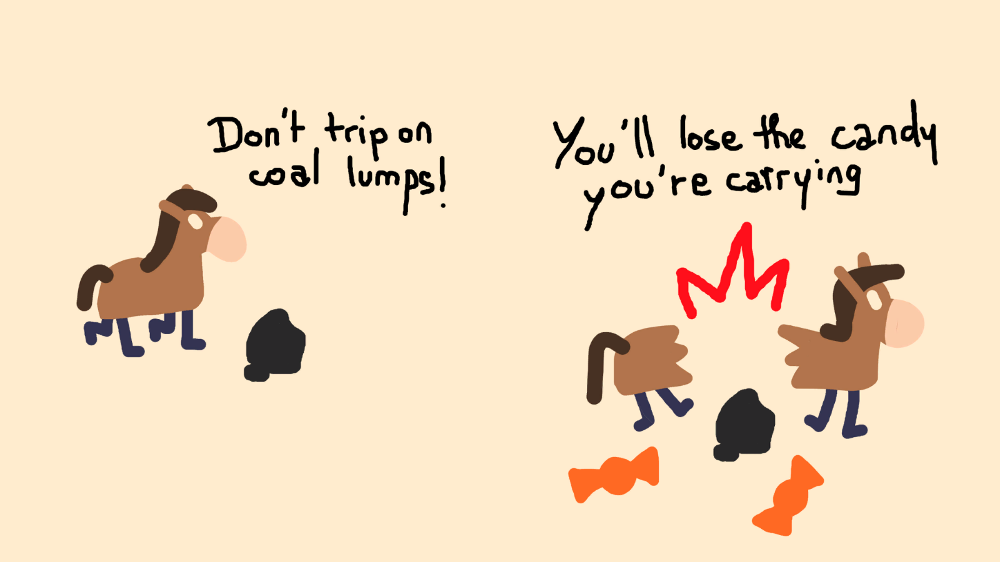
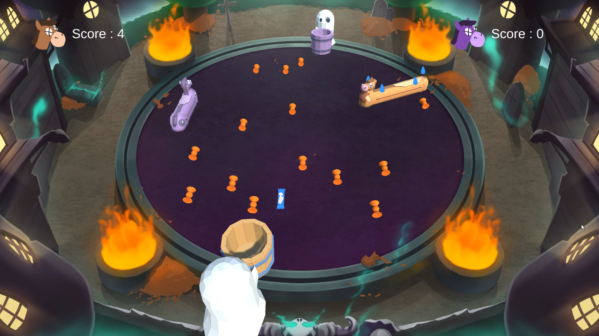

About the game
A local-multiplayer couch game, made during the 2024 Enjam (a GameJam made by and for Enjmin students). A few days before Halloween, we made a game about collecting candies in a horse costume, don't go too far from each other or you'll break in 2 ! The game was made by a team of 5 persons in ~3 days in Unity.
My Contributions
Mainly I worked on the stretch system between the two players, using Hook law (a very useful physic law describing how springs work), I knew this system from my scientific background and it was a pleasure to adapt it for gameplay reasons. I also made candies and coal generation, UI and sound integration.
Gallery



